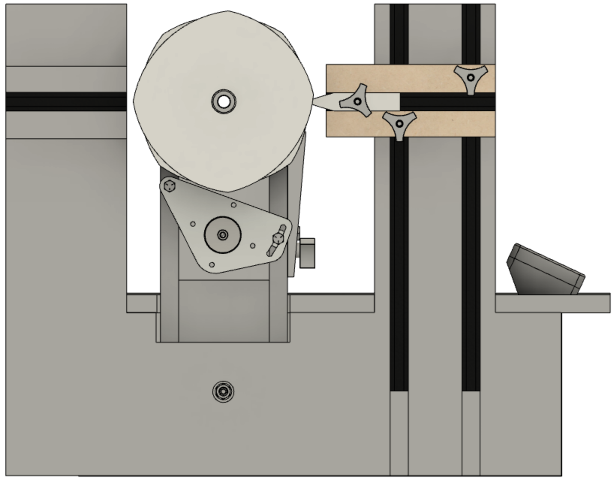
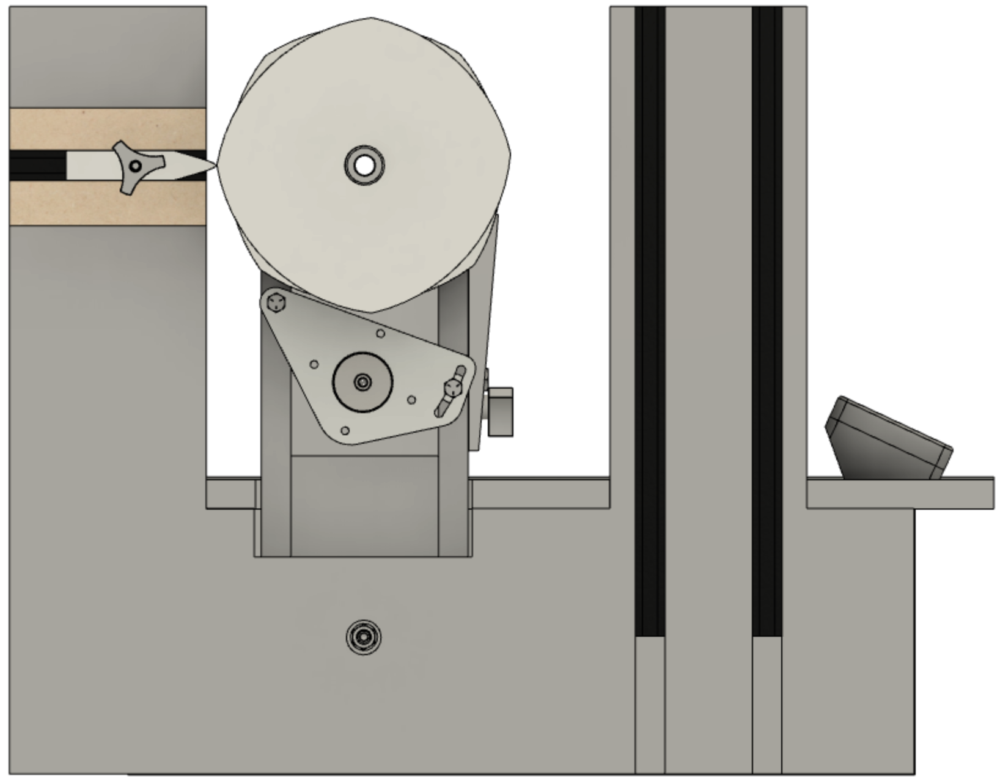
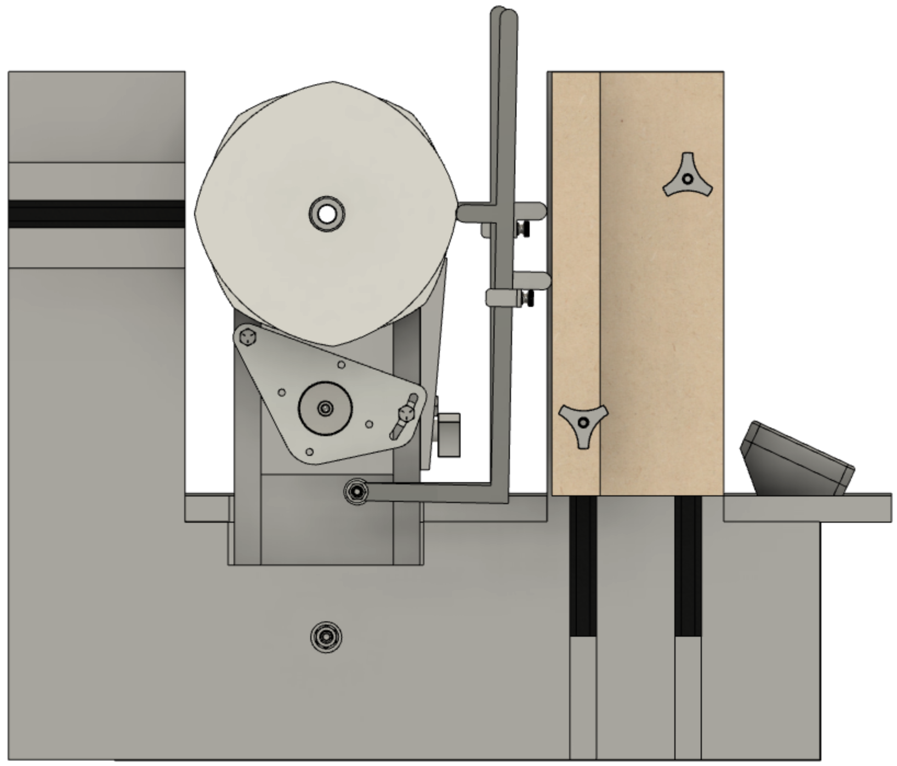
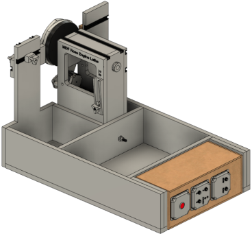
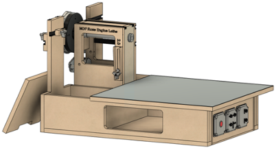
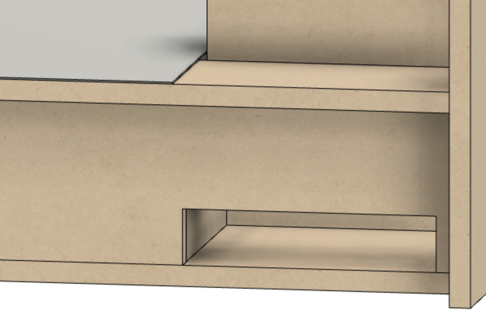

Rubber on Near Column

Rubber on Far Column

Dual, Independent Amplitude Adjusters
The changes incorporated into the MDF Rose Engine Lathe 2.0 include:
- Many of the designs are documented in a standards document to allow for other components to be made and added to this base design.
- The machine is designed for using a stepper motor drive on the spindle. There is no longer an accommodation for manually turning the spindle.
- This machine has 2" more clearance over the bed. The center line of the spindle to the top of the bed is now around 8".
- The distance from the pivot point to the spindle on the headstock is 1" longer, and
- The pivot points are set to be 1" higher in the base.
- This machine comes with a spindle which has a Morse taper rather than a 1" - 8 TPI threaded end.
- The rubber support tower was completely redesigned:
- There are both near and far rubber support capabilities.
- Support is included for the use of at least two different types of amplitude adjusters.
- The front rubber support tower was moved further away from the spindle.
- The rubber holder for the near rubber can be flipped and also moved vertically. This easily accommodates using an amplitude adjuster.
- An amplitude adjuster will be available later which will accommodate two rosettes, each with its own, separate amplitude adjuster (shown installed in the picture to the right).
- The bed is larger (24" x 24") and is designed to have a steel sheet on the top where magnetic switches can hold the cross slide (or other component) in place.
- The controls are being sold as a pre-wired unit that is "plug in, hook up, and go". Soldering is not required, nor is having to figure out which wires get connected to what and how. The instructions are also published in case you want to do it yourself or change what was done.

Controls Box under Lathe Bed

Storage Options
- These controls are also designed to be placed under the bed of the MDF rose engine lathe 2.0. If added to the the original MDF rose engine lathe, it can be set to the side.
The first picture to the right shows the controls under the bed of the MDF rose engine lathe 2.0 (the bed cover has been removed). This in particular allows the other open areas to be used as the owner wishes.
The second picture to the right shows part of the lathe bed removed (as it was designed to be more of a lid than part of the bed proper), and also part of the front side cut away to allow for storage there also. The cut out part is certainly something the user can do.
- The controls for the stepper motors are designed for:
- Driving the spindle using a stepper motor.
- Simultaneously controlling one additional stepper motor for activities such as driving movement on the cross slide.
- Connecting stepper motors with up to 4 amps of current draw.
- Incorporating the use of limit switches (so that cuts can be left to complete when they are taking a while - one user went to dinner and left his running).
- Controlling stepper motors in 4 axes of motion (X, Y, Z, and B).
- Delivering user functionality in the controls such as
- Indexing,
- Cutting flutes and helices,
- Cutting a Greek key/ meander pattern, and
- Emulating a geometric chuck.
- Using a touchscreen for managing these movements.
- Implementing and publishing standards for all the connectors, allowing for ease in development and use of future add-ons. This includes:
- Stepper motors - the system accommodates the spindle drive plus connecting up to 3 more,
- Limit switches - the system accommodates 2, and
- Nextion touch-screen display for making it easy to control the operation.
- The stepper drive parts and the control box are all available to add to an existing MDF rose engine.
- The headstock has T-Track on the top and back, and the placement of these is set as a standard so others can make add-ons (e.g., a tail stock).

Opening to Vacuum Out Dust
- Dust removal is easier. The headstock allows dust to fall thru to the base, and there is an opening on the back to allow it to be vacuumed out. (You no longer have to shoot compressed air into the headstock or the space around the headstock whilst keeping your eyes closed.)
- If you already have an MDF rose engine lathe, you can upgrade to the 2.0 version by making the new MDF parts according to the instructions or buying the pre-cut kit. Some of your T-tracks will be re-usable but it may be best to buy new ones.
- An overhead drive is designed like the original Holtzapffel approach (giving it a little bit of a legacy look). You can the picture of it on the right.
- The complete system can be purchased as a kit for easy assembly. This system components, all of which can be purchased separately, include:
- Base kit (like Jon Magill used to provide, but with a spindle with a Morse taper),
- Pre-cut MDF parts,
- Overhead drive,
- Cross slide,
- Stepper motor controls and spindle drive stepper motor, and
- Universal cutting frame.
- Detailed instruction guides are available for the woodworker who wishes to build their own.
- All documentation is being provided electronically and will be kept up-to-date and available online for free.
- Also, the user manual for the stepper motor controls are on-line. The manual works like the application does and provides information on the screen which is relevant to the operation being started.
- A tablet version of the documentation will also be available for those who don’t have a good Internet connection.
|


{kind=link}
{kind=link}
{kind=link}
{kind=link}
{kind=link}
{kind=link}
{kind=link}
{kind=link}